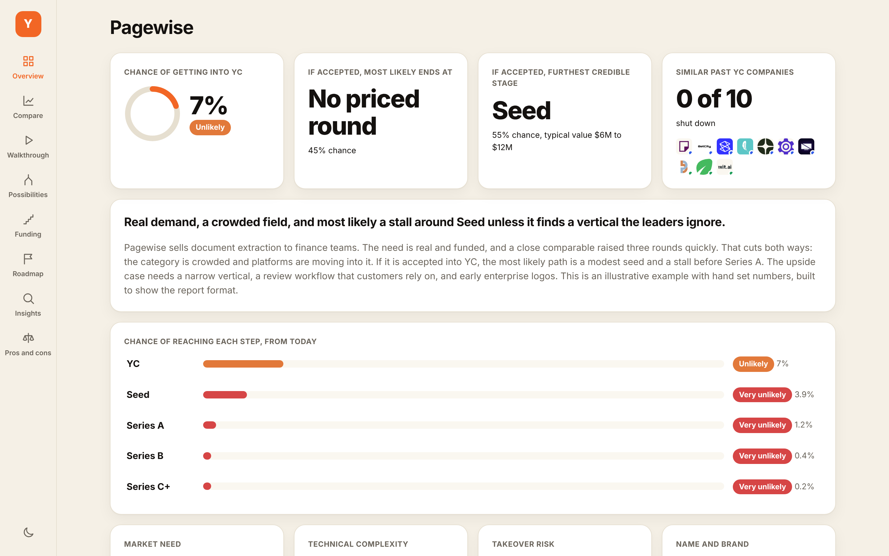

Will I Raise?
Find out if your startup has what it takes. See how far it could go, round by round.
Ask once. Get odds for every round.
A short chat in, a full report out. This is an example with a made up startup.
Three steps, about a minute.
Paste the prompt
Copy the prompt above. Use Chat to ask in plain words, or Agent to have your coding agent install the skill from GitHub first.
Describe your startup
Say what you build, who it is for and how far along you are. Numbers like users and revenue make the answer sharper.
It uses the skills
The skill compares you with past YC companies, then gives the odds, the raise sizes and the reasons it could fail at each round.
Four skills, one dataset.
Every skill reads the same research on 6,398 YC companies: when they raised, why they won, why they failed.
Evaluator
Chance of getting into YC, then odds, raise size and valuation at each round, with a plain reason it could fail.
yc-startup-evaluatorCreator
Finds one strong idea, then attacks it with an investor, a doubter and a judge until the judge would invest.
yc-startup-creatorName creator
Makes and scores startup names, and rates the brand against what worked for past YC companies.
yc-name-creatorExtractor
Built the dataset. You only need it to refresh the research on every YC company.
yc-knowledge-extractorOne clean HTML file you can keep.
Each evaluation ends with a standalone report. Double click to open it. No install, no account, works offline.

Overview: your odds, your most likely stopping stage and the companies you resemble.
Find out if your startup has what it takes.
Copy the prompt, describe your startup, and get your odds.
Back to the prompt